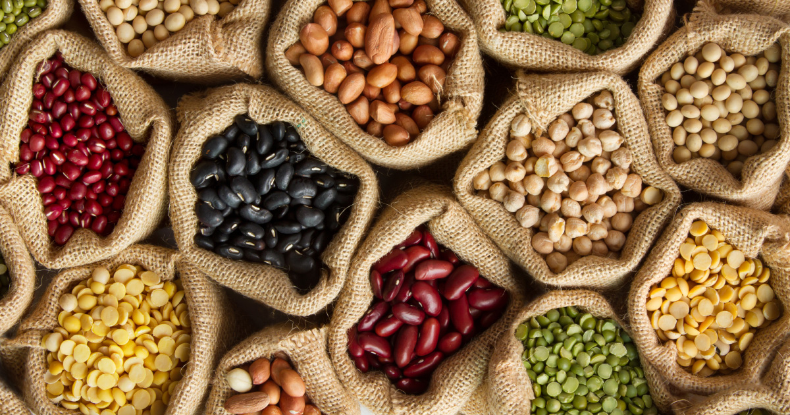

<ion-menu [content]="content">
  <ion-header>
    <ion-toolbar>
      <ion-title>Menu</ion-title>
    </ion-toolbar>
  </ion-header>

  <ion-content class="card-background-page">

    <ion-card>
      
      <div class="card-title">ANNUJUM</div>
      <div class="card-subtitle">Le marché des sémences</div>
    </ion-card>

    <ion-list>
      <ion-item *ngFor="let category of categories" text-wrap (click)="openCategoryPage(category.id)" menuClose>
        <!-- <ion-img src="assets/images/{{category.iconPhoto}}" item-left large></ion-img> -->
        <ion-thumbnail item-left>
          
        </ion-thumbnail>
        <h2> {{category.id}} - {{ category.name }} </h2>
        <h5> {{ category.description }} </h5>
        <h5> {{ category.iconPhoto }} </h5>
      </ion-item>
    </ion-list>
  </ion-content>

</ion-menu>

<ion-nav #content [root]="homePage"></ion-nav>